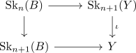
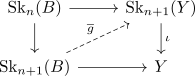

cellular approximation
Proposition
Let $(B,A), (Y,X)$ relative cw complex
\begin{align*}
f: (B,A) \rightarrow (Y,X)
\end{align*}
a map of pairs.
Then there exists a relative cellular map
\begin{align*}
g: (B,A) \rightarrow (Y,X)
\end{align*}
and a homotopy relative to $A$
\begin{align*}
g \simeq_{A} f
\end{align*}
Proof
Consider

where $\iota$ is \(n+1\)-connected (cf.) and
hence there exists a lift

with
\begin{align*}
\overline{g}_{\vert \mathrm{Sk}_n(B)} = f
\end{align*}
and
\begin{align*}
\iota \overline{g} \simeq a \mathrm{rel } \mathrm{Sk}_n(B)
\end{align*}